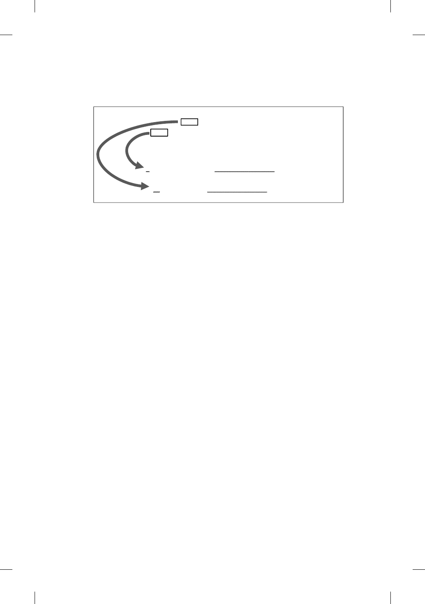

e Eschatological Discourse ontheMountofOlives 175
Diagram 5
Structure of the Olivet Discourse
The Compound Question (v. 4)
WHEN will these things happen?
WHAT will be the sign that they are all about to be fulfilled?
The Answer (vv. 5-37)
A PROPHECIES relating to the destruction of the Temple (vv. 5-23)
B PROPHECIES relating to the Parousia of the Son of Man (vv. 24-27)
A' TIMEFRAME for the destruction of the Temple (vv. 28-31)
B' TIMEFRAME for the Parousia of the Son of Man (vv. 32-37)
e form the disciples’ questions take (v. 2) may be collapsed into a com-
pound question with two aspects: the rst asks for the time, while the
second, the sign. is may be further construed as presupposing two inter-
related events, namely the destruction of the Temple and the coming of the
Son of Man. One of the earliest interpreters of Mark, the evangelist Mat-
thew, understood it in that way (Matt 24:3).
76
As to the structure, we note
that v. 23 serves as a signicant marker where it is stated all that needed
to be foretold has been said. Hence, vv. 5–23 may be construed as form-
ing one block, which may of course be broken down into smaller units.
Furthermore, vv. 24–27 evince a dierent sort of language, concentrating
on celestial phenomena. In this regard, they may be construed as forming
another block. With v. 28, the material focuses on the time aspect, and may
justiably be broken down into two blocks of vv. 28–31 and vv. 32–37. All
this produces an ABA’B’ structure. e structure also shows that the two
questions the disciples asked are answered in reverse order: the events (or
signs leading to the key events) are rst discussed (A and B material), fol-
lowed by the teaching on the time (A’ and B’ material). We will now examine
the passage closely.
e Setting (13:1–4)
is paragraph gives the audience the setting of the discourse. As such, it
oers them and us an important hermeneutical reference point. It is impor-
tant to note that what prompted the discourse is the disciples’ awe over the
Temple, and their subsequent question about its predicted destruction. In
76. We presuppose here the cogency of the Two Document Hypothesis.